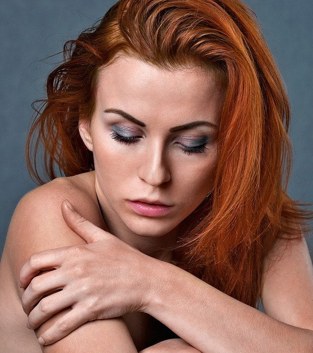

Избавляемся от морщин на лбу раз и навсегда
Ни одно женское лицо, разумеется, не украшают морщины на лбу, тем не менее, они являются весьма распространенным явлением. Эта проблема может появиться у любого человека в любом возрасте, и тем самым доставить немало беспокойства.
Причины, по которым появляются подобного рода морщины, могут быть самыми разными:
- - возраст,
- - неправильный или недостаточный уход за кожей,
- - слишком активная мимика,
- - привычка щурить глаза,
- - особенность строения лица,
- - генетическая предрасположенность,
- - стресс или чрезмерные физические нагрузки,
- - плохая экология и другие.
Какие существуют способы избавления от морщин на лбу?
В сети есть огромное количество статей о том, как убрать морщины на лбу в домашних условиях. Среди них можно найти и всевозможные маски, и самые невероятные повязки, и разнообразные смеси, которые предлагается применять на лице, а также многочисленные массажи и гимнастики. Однако их эффективность кажется весьма сомнительной, да и возни, как правило, с ними немало.
Частенько можно встретить и предложения другого рода, такие как пластическая хирургия или косметические процедуры, вроде инъекций ботокса. Разумеется, это весьма радикальные методы, которые не только безумно дороги, но еще и совсем небезопасны. И без особой необходимости к ним, пожалуй, прибегать не стоит.
Но тогда как убрать морщины на лбу? Есть одно замечательное средство – крем-воск ЗДОРОВ. Он абсолютно натурален и безопасен, прошел все необходимые клинические испытания и имеет об этом соответствующие сертификаты.
Как работает пчелиный крем?
Крем-воск ЗДОРОВ уже помог тысячам женщин по всей стране избавиться от огромного количества проблем с кожей. Ведь он не только разглаживает морщины на лбу. Благодаря его действию кожа на лице становится гладкой, упругой, обретает румянец и начинает дышать. Крем также помогает справиться с излишней сухостью или чрезмерной потливостью кожи, забыть про шелушения, микротрещины и прыщи.
Отличительной особенностью этого продукта является то, что он воздействует на проблемы на клеточном уровне, устраняя их причины, а не только маскирует внешние проявления.
Крем ЗДОРОВ рекомендуется использовать ежедневно. Его стоит нанести на чистую и тщательно высушенную кожу лба после вечернего умывания тонким слоем легкими массирующими движениями до полного впитывания. Почувствовать его эффект можно буквально сразу после нанесения, когда за счет действия пчелиного яда происходит прилив крови к поверхности кожи и можно почувствовать покалывание. Уже через неделю результаты «работы» средства будут заметны не только вам, но и окружающим. А если вы продолжите применять крем регулярно в течение месяца, то вы просто сами не узнаете себя в зеркале! И уж точно никогда и не вспомните о морщинах в области лба, не прибегая при этом к дорогостоящим и опасным процедурам.
Не стоит забывать, что крем-воск ЗДОРОВ нельзя приобрести в магазинах или аптеках. Его можно заказать только на официальном сайте. Для того чтобы это сделать нужно просто заполнить специальную форму и дождаться, пока специалисты компании перезвонят вам. Консультанты-косметологи обязательно расскажут вам обо всех свойствах пчелиного крема, ответят на все вопросы, а также сообщат о скидках и акциях, которые актуальны на данный момент.
Компания ЗДОРОВ доставляет крем по всей России посредством почтовой пересылки. Оплата производится только при получении товара наложенным платежом, так что вы можете не бояться потерять свои деньги и остаться без заказа.
Заказывайте крем-воск ЗДОРОВ прямо сейчас и навсегда забудьте о морщинах на лбу и не только.